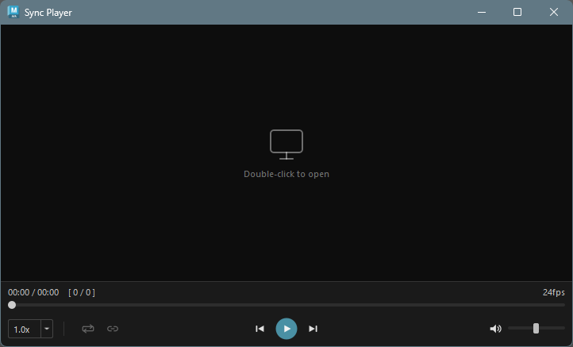
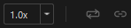
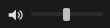

Sync Player
Overview
Sync Player is a tool for playing video files within Maya. In addition to functioning as a standard video player, it features Maya timeline synchronization, allowing you to review reference footage while working on animations.
Supported Formats
mov, avi, mp4, wmv
How to Launch
Launch the tool from the dedicated menu or using the following command:
import faketools.tools.common.sync_player.ui
faketools.tools.common.sync_player.ui.show_ui()
UI Layout
The window consists of the following elements:
| Area | Description |
|---|---|
| Video display area | Displays the video. A placeholder is shown when no video is loaded |
| Time/frame display | Shows the current playback position, total duration, and frame numbers |
| FPS display | Shows the frame rate of the loaded video |
| Seek bar | Slider for controlling the playback position |
| Control bar | Buttons for playback controls and various settings |
Basic Usage
Loading a Video File

Open a video file using the following method:
- Double-click the video display area to open a file dialog
- Double-click is blocked while a video is playing
Note: Double-click file loading is disabled when Maya Sync is active.
Playback Controls
Use the center buttons on the control bar for playback operations.
| Button | Description |
|---|---|
| Previous frame | Step back one frame |
| Play / Pause | Toggle between play and pause |
| Next frame | Step forward one frame |
Seek Bar
Drag the seek bar to jump to any playback position.
- When paused, dragging the seek bar temporarily enters a playback state to update the video frames. Releasing the slider returns to the paused state.
Time/Frame Display
Playback information is shown above the seek bar.
MM:SS / MM:SS [ current frame / total frames ]Control Bar

Playback Speed
Select the playback speed from the dropdown on the left.
| Speed | Description |
|---|---|
| 0.25x | Quarter speed |
| 0.5x | Half speed |
| 0.75x | Three-quarter speed |
| 1.0x | Normal speed (default) |
| 1.25x | 1.25x speed |
| 1.5x | 1.5x speed |
| 2.0x | Double speed |
Loop Playback
Click the button to automatically restart playback from the beginning when the video reaches the end.
When loop is enabled, the button icon changes to .
Maya Sync (Timeline Synchronization)
Click the button to enable Maya timeline synchronization mode.
When sync is enabled, the button icon changes to .
Sync Mode Behavior
- When sync is enabled: The video
playback position follows Maya’s timeline
- Playing the Maya timeline also plays the video
- Stopping Maya playback pauses the video
- Scrubbing (dragging) the timeline seeks the video to the corresponding frame
- When sync is disabled: Operates as a standalone video player
Control Restrictions During Sync
While sync mode is active, the following controls are disabled:
- Play / Pause button
- Frame forward / backward buttons
- Playback speed changes
- Loop toggle
- Seek bar
This is because video playback is fully controlled by Maya’s timeline.
FPS Mismatch Warning
When enabling sync, a warning message is displayed if the video’s FPS differs from the Maya scene’s FPS. When FPS values differ, frame stepping and frame number display may not match the video’s actual frames.
Volume Controls

The mute button and volume slider are on the right side.
| Control | Description |
|---|---|
| Mute button | Toggle audio on/off |
| Volume slider | Adjust volume from 0 to 100 |
Keyboard Shortcuts
| Key | Description |
|---|---|
| Space | Toggle play / pause |
| Right / Up | Step to next frame |
| Left / Down | Step to previous frame |
Note: Keyboard shortcuts are disabled when Maya Sync is active.
Settings Persistence
The following settings are automatically saved when the window is closed and restored on next launch:
- Volume
- Mute state
- Loop playback on/off
- Playback speed
Extending Supported Formats
Sync Player uses Qt’s QMediaPlayer, so the playable formats depend on the OS media backend.
Windows
On Windows, Windows Media Foundation (WMF) is used as the backend. It supports mp4 (H.264), wmv, avi, etc. by default, but you can extend format support by installing additional codecs.
| Codec Pack | Description |
|---|---|
| K-Lite Codec Pack | A popular codec pack with broad format support. The Basic edition is sufficient |
| LAV Filters | FFmpeg-based DirectShow filters. Also bundled with K-Lite |
Installing a codec pack enables playback of formats such as WebM (VP9), MKV, and HEVC (H.265) that are not supported by default, via WMF.
Note: Maya must be restarted after installing a codec pack.
Notes
- Video loading uses the Windows Media Foundation (WMF) backend. In rare cases the backend may become unresponsive, but the tool automatically recreates the player and retries
- If video loading does not complete within 10 seconds, it times out and returns to the placeholder screen